FIAP • EDGE COMPUTING • CP3
Detecção de ocorrências e sinalização viária
Rogério Deligi Ferreira Filho — RM561942
Maria Fernanda Garavelli Dantas — RM562686
Turma 2CCPW • FIAP • Prof. Marcelo Fernando Morgantini • 16/10/2026
Protótipo com dados e recursos fictícios; recomendações não constituem protocolo médico.
Repositório: RogerioOxy/MotivaVision-CP3.
Projeto Wokwi: PENDENTE_LINK_WOKWI.
Coleta real do simulador: 16/10/2026, 18:37–18:44 (−03:00).
Avaliação final preservada: 4/6. Dados inteiramente sintéticos.
Vídeos sintéticos locais alimentam visão clássica. O detector emite um JSON por episódio, com tipo, índice heurístico, indicadores e referência a JPG com instante. MQTT entrega à central Flask; SQLite conserva decisões, outbox e ACKs. Um operador fictício confirma ou rejeita. A dona da fila recebe SUSPEITA preliminar automaticamente; confirmação libera CONFIRMADO, rejeição e encerramento liberam NORMAL. FIFO avança após APLICADO. O ESP32 devolve RECEBIDO/APLICADO. Exportações JSON/CSV não dependem da página aberta.
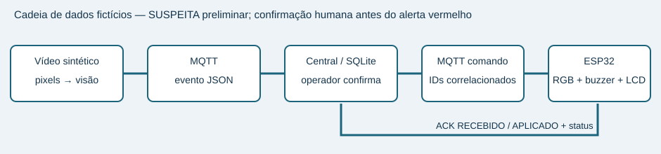
A cadeia offline usa MQTT em memória e modelo Python do dispositivo. Não comprova Wi-Fi, broker real, circuito ou firmware. Os 33 arquivos de evidência documentam o ensaio de 16/10/2026 com o firmware no Wokwi, broker público, central e detector. O protótipo não foi testado em hardware físico. Não há clip de evidência; há JPG anotado e vídeo completo para reprodução.
O detector recebe pixels BGR e tempo decodificado do vídeo. Não importa o gerador nem abre rótulos; não interpreta nome, semente ou metadados de cenário. tools/evaluate.py é o único consumidor dos rótulos na cadeia de decisão. Testes e relatório podem ler o manifesto para verificar diversidade e resultados.
São 12 vídeos neutros, 20 fps, 480×320, com duração de 6,6 a 9,4 s: seis colisões (duas de cada categoria), quatro negativos e dois ambíguos. Cada conjunto tem três colisões, dois negativos e um ambíguo. Impactos ocorrem entre 2,4 e 5,0 s, em posições diferentes, com sentidos opostos, automóveis e veículos longos, ângulos laterais de 55°/125° e tráfego não envolvido. Há cenas com quatro/cinco veículos e com cores praticamente iguais. data/labels.json registra cada parâmetro para auditoria; a classificação não recebe esses dados.
Negativos: passagem em sentidos opostos; frenagem forte com tráfego em outra faixa; veículo parado no acostamento; ultrapassagem rente sem redução brusca de velocidade. No ambíguo dev, os veículos colidem sob chuva, redução local de iluminação e borrão, permanecendo rastreáveis. No final, um pilar encobre parte dos veículos e a região de possível contato; o restante da via permanece visível. As duas cenas exigem raciocínio temporal, sem apagar globalmente a imagem.
A cinemática modela aproximação, contato geométrico, dissipação exponencial, parada e pequena rotação lateral. Não reproduz deformações, pneus ou dinâmica de um veículo real. A câmera é ortográfica e o tremor é subpixel; não há validação em perspectiva ou câmera móvel.
A mediana espacial de 71×71 do primeiro quadro estima o fundo. Subtração em tons de cinza com diferença >28 e abertura 3×3 remove ruído e marcas finas. Esse fundo permanece fixo para não absorver veículos parados. Não há bin de matiz, classe por cor ou cor reservada a um ator. Um veículo pode ser cinza. Essa escolha é adequada apenas à via sintética uniforme: objetos grandes, fundo com texturas e iluminação variável podem contaminar a estimativa.
Componentes conectados são associados ao centro previsto pela velocidade recente, com penalidade para mudança de área. Se um componente contém dois centros previstos, uma partição espacial recupera os dois rastros. A confiança de visibilidade cai nessa fusão. Não se afirma identidade perfeita sob oclusão longa; o teste de blob fundido é curto e controlado.
Candidato: distância entre contornos ≤25 px, aproximação radial >12 px/s e ambos os veículos em movimento (>8 px/s). Contato observado acumula somente quando a distância entre contornos é ≤10 px. Aguarda 1,45 s após início do candidato, exige proximidade por ≥0,20 s e razão de velocidade pós/pré ≤0,55. Sem queda de velocidade, aproximação rente não é colisão. Esses portões abrem a análise; não tornam os termos abaixo binários.
Com clip(z)=min(1,max(0,z)), os termos contínuos são:
S = (0,20 A + 0,20 C + 0,25 D + 0,15 I + 0,20 M) × (0,30 + 0,70 Q).
S é um índice heurístico [0,1], não probabilidade de acidente, gravidade ou diagnóstico. Todos os termos são registrados no payload. Cos <−0,65 → FRONTAL; cos >0,65 → TRASEIRA; restante → LATERAL. S <0,60 → INDETERMINADO com medidas e motivo no evento. Não há ocorrência automática só porque a qualidade global caiu.
No dev inicial, janela de 0,95 s e limiar de 0,68 produziram 4/6: a decisão antecedia observação suficiente de parada. A janela foi ampliada para 1,45 s e o limiar ficou em 0,60: dev ambíguo 0,284; menor colisão 0,612. A margem de apenas 0,012 da lateral evidencia sensibilidade. Não foi feita otimização estatística: é calibração exploratória em seis simulações. calibration.json guarda parâmetros, instante e hashes dos fontes, manifesto e vídeos. O final só roda se esses bytes continuam iguais. Não houve ajuste após os erros finais.
CAM-SIM-01 usa coordenadas ortográficas fixas. As quatro faixas são os intervalos verticais [65,120), [120,175), [175,230), [230,285) px; dois sentidos por metade da pista. Fora desses intervalos é acostamento. A geometria é uma calibração da cena, não uma detecção universal de faixas. Não convertemos pixels em metros.
A quantidade envolvida começa com o par que perdeu movimento. Outros rastros entram somente se estavam em movimento antes, estão parados depois e ficaram a menos de 100 px da região. Tráfego distante não é somado. Imobilizado = velocidade <10 px/s; tempo parado é observado no histórico. Uma faixa está possivelmente obstruída quando pelo menos 30% da altura da caixa do veículo imobilizado a intersecta. Isso não prova bloqueio integral ou impossibilidade de passagem. Os campos incluem quantidade, faixas, imobilização e duração da parada; não há inferência de vítimas.
Matriz ordenada, fictícia e sem valor de protocolo médico:
| Regra | Tipo + evidência | Recurso sugerido para decisão humana |
|---|---|---|
| M0 | INDETERMINADO ou confiança insuficiente | Revisão humana sem concluir tipo/gravidade |
| M1 | FRONTAL, ≥2 envolvidos e imobilização | Avaliação prioritária / resgate simulado |
| M2 | LATERAL e faixa possivelmente obstruída | Ambulância simulada |
| M3 | TRASEIRA e ≥3 envolvidos | Ambulância simulada |
| M4 | TRASEIRA/LATERAL e imobilização, após regras anteriores | Equipe operacional |
| M5 | Nenhuma combinação sustentada | Revisão humana |
A regra disparada é persistida no evento e recalculada pela central. Os testes contrafactuais variam indicadores mantendo o tipo e demonstram mudança de regra. Há regras diferentes realmente exercidas nos vídeos; a avaliação final não foi modificada para completar a matriz.
Distância de agrupamento <140 px e intervalo <8 s vêm somente de vision/parameters.py. O agrupamento é por sessão, não uma identidade global persistente: um episódio muito longo pode repetir depois da janela e dois incidentes próximos podem ser unidos. Cada vídeo com ocorrência nesta execução emitiu um único event_id.
No final, seq02 (lateral junto ao acostamento/topo) retornou SEM ACIDENTE: falso negativo. Seq09 (contato encoberto) também retornou SEM ACIDENTE, em vez de INDETERMINADO. O diagnóstico posterior, sem alterar fontes congelados, registrou zero candidatos temporais elegíveis nas duas cenas; final-diagnostics.json mostra veículos visíveis, inclusive visibilidade parcial no topo/atrás do pilar. Hipótese: recorte e contato oblíquo/oculto impedem os portões geométricos e cinemáticos antes de chegar ao escore. Não é correto atribuir a segunda falha a um escore baixo: nenhum escore foi emitido. R2 está parcialmente atendido (chuva dev funciona; oclusão final falha). Reduzir cegamente os portões poderia aumentar falsos positivos e não foi tentado após o final.
Nos negativos e nesses dois erros, score é N/A e regra SEM_EVENTO: não existe payload para pontuar. SEM ACIDENTE significa apenas ausência de gatilho neste algoritmo, e o falso negativo mostra por que isso não garante segurança real. A melhoria futura seria uma classe de dúvida por perda temporal localizada de rastros, calibrada em um novo dev e avaliada em um novo conjunto final independente.
Na seq04 há quatro veículos em cena e dois envolvidos no gabarito, mas o evento
registrou veiculos_envolvidos: 3. Isso acionou M3/AMBULANCIA_SIMULADA.
O avaliador por tipo conta TRASEIRA como acerto e não mede esse erro.
O agrupamento pode incorporar um rastro próximo/parado ou fragmentado;
a participação causal de cada rastro não foi demonstrada. A causa exata não
foi isolada. Propõe-se gabarito de participação por ator, erro de contagem,
precisão/recall dos envolvidos, obstrução e regra sugerida. Nenhuma alteração
do detector foi feita após a avaliação final. Evidência: JSON da seq04 e
histórico em docs/evidencias/integracao/; detalhes em INTEGRACAO.md.
A tabela seguinte é produzida diretamente do manifesto do gerador, sem redigir resultados manualmente.
| Vídeo / conjunto | Situação | Duração s | Referência s | Atores |
|---|---|---|---|---|
| seq01.mp4 / dev | normal | 6.8 | 2.0 | 5 |
| seq02.mp4 / final | lateral | 8.6 | 4.5 | 4 |
| seq03.mp4 / dev | rain | 7.4 | 3.6 | 4 |
| seq04.mp4 / dev | rear | 7.2 | 2.4 | 4 |
| seq05.mp4 / final | braking | 8.8 | 3.1 | 4 |
| seq06.mp4 / final | front | 6.6 | 2.8 | 3 |
| seq07.mp4 / dev | parked | 8.0 | 3.0 | 5 |
| seq08.mp4 / dev | lateral | 7.8 | 3.2 | 3 |
| seq09.mp4 / final | occlusion | 9.4 | 5.0 | 4 |
| seq10.mp4 / final | rear | 8.2 | 3.7 | 3 |
| seq11.mp4 / dev | front | 9.0 | 4.1 | 4 |
| seq12.mp4 / final | near | 7.6 | 3.4 | 5 |
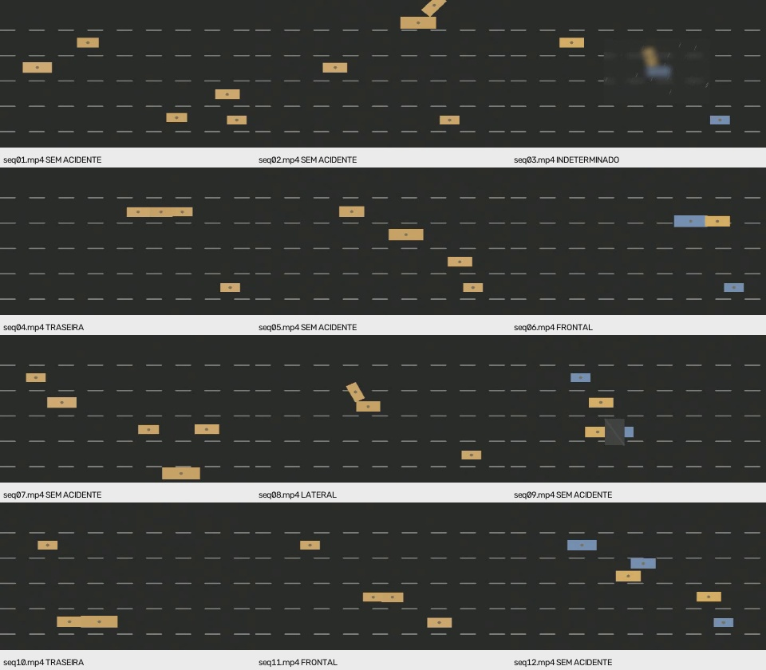
Quadros extraídos em impacto parametrizado +0,5 s (ou instante de referência nos negativos). O painel não substitui a reprodução temporal de cada vídeo.
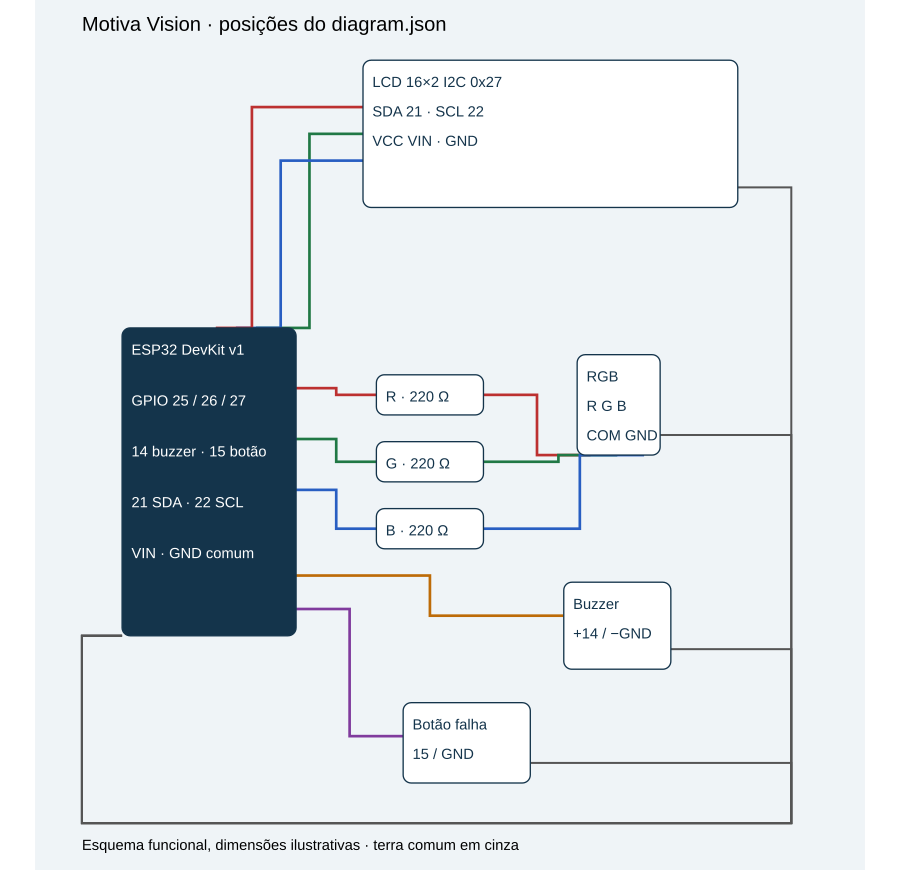
Firmware executado no simulador em 16/10/2026, 18:37–18:44 (−03:00). O registro do ensaio indica compilação sem erros e início sem aviso de Wi-Fi; o log integral de compilação não foi preservado. Resultados e limites: INTEGRACAO.md. O endereço compartilhável fica no cadastro de links, seção Wokwi.
sketch.ino, diagram.json e libraries.txt pelos três arquivos
homônimos de esp32/. Preserve a montagem do JSON.Wokwi-GUEST, sem senha, broker broker.hivemq.com:1883,
prefixo motiva/561942/ igual ao da central..venv/Scripts/python -m central.app, compile e inicie
a simulação. Abra http://127.0.0.1:5000 e espere NORMAL após heartbeat.| Pino ESP32 | Componente | Ligação complementar |
|---|---|---|
| GPIO25 | resistor 220 Ω → canal R do RGB | cátodo comum → GND |
| GPIO26 | resistor 220 Ω → canal G do RGB | mesmo GND |
| GPIO27 | resistor 220 Ω → canal B do RGB | mesmo GND |
| GPIO14 | positivo do buzzer piezo | negativo → GND |
| GPIO15 | botão de injeção | outro contato → GND; INPUT_PULLUP |
| GPIO21 | LCD SDA | LCD I2C 0x27, 16×2 |
| GPIO22 | LCD SCL | VCC → VIN/5 V virtual; GND comum |
DevKit alimentado pelo simulador. Não conectar GPIO a 5 V. Buzzer piezo virtual;
carga real maior exigiria estágio de acionamento. SVG segue diagram.json:
LCD acima (−180, 180), ESP32 à esquerda (20, 0), resistores em coluna,
RGB à direita (40, 340), buzzer (210, 330), botão (300, 210), posições (top, left).
Fotos mostram a montagem em execução; o SVG é ilustrativo.
NORMAL verde; SUSPEITA amarelo preliminar a cada 400 ms; CONFIRMADO vermelho
com buzzer (1 kHz, 150 ms/1,2 s); FALHA roxo a cada 150 ms, tempos do simulador.
LCD mostra estado e cinco caracteres do evento ativo, ou traço; segunda
linha: fase e motivo sem MQTT, sem heartbeat ou NVS em FALHA.
Laço usa millis/micros; rede síncrona em tarefa FreeRTOS com backoff.
Uma tarefa inicia Wi-Fi e não repete begin durante tentativa em andamento.
Só um evento sinaliza por vez; todos ficam na central em FIFO persistente. A dona da fila recebe SUSPEITA automática. CONFIRMAR gera CONFIRMADO; REJEITAR/ENCERRAR gera NORMAL. A próxima vaga depende de NORMAL/APLICADO. Rejeição em fila fica registrada e recebe NORMAL quando promovida. RECUSADO bloqueia avanço para inspeção. Simultaneidade tem testes offline; não foi exercitada no Wokwi nesta coleta.
Anel de 64 command_ids em NVS; eventos encerrados em lista separada sem expulsão deliberada. IDs antigos expulsos podem voltar a atuar em evento ainda ativo; encerrado não reabre enquanto tombstones persistirem. Memória é finita e falha de gravação causa FALHA. Reinício/NVS/energia e mais de 64 comandos no firmware continuam sem teste real nesta coleta; o modelo Python não os comprova.
--publish, esperar SUSPEITA amarela,
identificar operador fictício e CONFIRMAR. ENCERRAR; publicar seq11 e REJEITAR.
Conferir NORMAL e histórico. Status 02/03/05/06 e diário documentam a coleta.Tabelas do relatório são calculadas dos arquivos de evidência e avaliações congeladas. Latências usam horários da central; simulação rodou a 34%–46%. Fotos não medem frequências ou tempo real. Para novos ensaios, preserve a coleta original e guarde arquivos em diretório separado.
A tela mostra tipo, confiança, indicadores, regra, evidência e decisões com identificação/horário. ENVIADO (aguardando ESP32), RECEBIDO e APLICADO possuem horários separados, duráveis. A confirmação humana não prova aplicação elétrica. O endpoint /status.json permite coletar conexão, último contato, estado recebido e contagens. Testes usam Flask test_client; as capturas mostram a página real em Edge headless. Acessibilidade não foi avaliada sistematicamente.
Somente simulação acadêmica com dados fictícios. Broker padrão broker.hivemq.com:1883, MQTT 3.1.1, sem TLS nesse endpoint público. Prefixo padrão motiva/561942/; alterável no Python por MQTT_PREFIX e no firmware pela constante PREFIX. Tópicos não são canais privados. Não enviar nomes de pessoas, localizações reais, credenciais ou imagens. No laboratório, identificar operador por código fictício.
| Sufixo | Origem → destino | QoS publicação | Assinatura | Retained |
|---|---|---|---|---|
| eventos | visão → central | 1 | 1 | não |
| comandos | central → ESP32 | 1 | 1 | não |
| ack | ESP32 → central | 0 (limite de PubSubClient 2.8) | 1 | não |
| status | ESP32 → central | 0; LWT 1 | 1 | sim |
| heartbeat | central → ESP32 | 1 | 1 | não |
QoS efetivo é o mínimo entre publicador e assinatura. QoS 1 pode duplicar mensagens; não significa atuação exatamente uma vez. ACKs do ESP32 podem se perder: a central reenvia comandos com o mesmo ID a cada dois segundos, e o ESP32 reenvia os dois ACKs sem atuar de novo. A visão aguarda PUBACK do broker, sem afirmar entrega à aplicação central. Eventos não retidos exigem central já assinando. A visão não possui outbox persistente; reiniciar a análise é uma nova sessão.
Todos os campos abaixo são obrigatórios e validados em central/protocol.py. SEM ACIDENTE é resultado de análise sem evento e não é publicado no tópico de ocorrências.
| Campo | Tipo, unidade e valores |
|---|---|
| event_id | string de 1–64 caracteres; UUID no detector; um por episódio na sessão |
| timestamp | ISO 8601 com fuso; instante da detecção no computador, não data real da gravação |
| camera_id | string fictícia; padrão CAM-SIM-01 |
| local | texto fictício, sem geolocalização real |
| tipo | TRASEIRA, FRONTAL, LATERAL, INDETERMINADO |
| confianca.indice | número finito entre 0 e 1, índice heurístico sem calibração probabilística |
| confianca.nivel | ALTA quando índice ≥0,60 (limiar em vision/parameters.py); INSUFICIENTE abaixo |
| confianca.definicao | explicação textual do índice |
| indicadores.veiculos_envolvidos | inteiro de 0 a 5 ou string desconhecido |
| indicadores.faixa_possivelmente_obstruida | sim, nao, desconhecido; hipótese geométrica, não inspeção real da pista |
| recomendacao.regra / recurso / justificativa | strings; a central recalcula pela matriz, ignorando a recomendação recebida |
| estado | SUSPEITA na emissão; estado do evento é controlado separadamente pela central |
| evidencia.quadro | referência a JPG local, nunca conteúdo binário/base64 |
| evidencia.tempo_video_s / frame | segundos desde início e índice de quadro a partir de zero |
| evidencia.observacao | medidas temporais ou justificativa de incerteza |
As imagens precisam estar no mesmo computador da central em data/evidence/. O protocolo não transfere arquivos entre máquinas. O detector mede obstrução pela interseção das caixas de veículos
imobilizados com faixas calibradas (limites y=65,120,175,230,285 px).
Interseção de pelo menos 30% da altura marca a faixa; não prova bloqueio integral.
Os indicadores adicionais são faixas_obstruidas (lista de 1–4),
veiculo_imobilizado (booleano) e tempo_parado_s (segundos não negativos).
A quantidade considera o par temporal e rastros próximos que perderam movimento,
sem somar todo o tráfego. confianca.termos registra A/C/D/I/M contínuos;
qualidade_local é Q [0,1]. Fórmula e matriz M0–M5: docs/VISAO.md.
Nenhuma recomendação é protocolo médico.
Comando JSON: event_id, command_id (strings 1–64), timestamp ISO com fuso, estado NORMAL, SUSPEITA ou CONFIRMADO. FALHA é estado autônomo do dispositivo; a central não o comanda. O validador compartilhado admite os quatro estados na representação; o receptor recusa FALHA como comando de atuação.
ACK repete event_id, command_id, estado, timestamp e acrescenta fase: RECEBIDO (parse e identificação), APLICADO (alvo aplicado pelo controlador) ou RECUSADO (transição/registro não permitido). clock_sync indica se o ESP32 obteve horário NTP. Antes de NTP, o timestamp do dispositivo usa época não sincronizada, com fuso +00:00; a central registra separadamente o horário local de recepção. O relógio do vídeo é sempre tempo_video_s, separado dos relógios dos computadores.
A central persiste o comando como PENDENTE na mesma transação da decisão. Aceitação pelo cliente MQTT marca ENVIADO; esse estado não é confirmação do broker nem do atuador. O ACK RECEBIDO avança a fase; apenas APLICADO correspondente ao estado solicitado conclui. ACK desconhecido, event_id incompatível e estado aplicado incompatível são recusados. Repetições são idempotentes e ACK atrasado não regride APLICADO. RECUSADO termina retransmissões automáticas e exige inspeção do operador.
O recebimento de uma ocorrência cria uma entrada FIFO persistente em SQLite. A primeira ocupa o sinalizador e gera SUSPEITA automaticamente. Todas aparecem na tela; somente a dona da sinalização pode ser confirmada. CONFIRMAR envia CONFIRMADO; REJEITAR envia NORMAL e registra REJEITADO; ENCERRAR após confirmação envia NORMAL e registra ENCERRADO. Operador e horário ficam no histórico. O formulário repetido não cria outro comando. A próxima entrada só ocupa o ESP32 após NORMAL/APLICADO da anterior, nunca apenas ENVIADO ou RECEBIDO.
Uma ocorrência em espera pode ser rejeitada imediatamente na central, mas seu NORMAL aguarda a vaga: quando promovida, recebe só NORMAL, que registra o evento encerrado no dispositivo sem acender a preliminar. A fila então avança após o ACK. Assim nenhuma ocorrência some da tela, nem uma rejeição reabre depois. A fila e a outbox sobrevivem ao reinício. A migração de histórico anterior conserva comandos/decisões existentes e prioriza ocorrência confirmada sobre suspeitas antigas. Um único comando fica em voo: SUSPEITA deve receber APLICADO antes de enviar CONFIRMADO ou NORMAL posteriores, inclusive quando o operador decide rapidamente. RECUSADO bloqueia a outbox para inspeção; não há avanço automático ou reset de histórico.
ESTADOS: NORMAL = verde; SUSPEITA = amarelo intermitente preliminar antes da decisão; CONFIRMADO = vermelho + pulso sonoro; FALHA = roxo a cada 150 ms (amarelo: 400 ms). MQTT perdido ou heartbeat >7 s do simulador leva a FALHA; recuperar exige MQTT e heartbeat novo, restaurando o alvo anterior. Não encerra silenciosamente. O LCD usa o evento ativo, ou “-” se vazio, nunca o evento do último ACK. Na FALHA, a segunda linha abrevia a fase (AP/RC/NG/IN) e mostra sem MQTT, sem heartbeat ou NVS. Fora da FALHA, mostra a fase completa.
Status a cada dois segundos do simulador, retido, com LWT FALHA/offline. O botão fecha o socket TCP sem MQTT DISCONNECT por 15 s do simulador, permitindo ao broker emitir LWT; não derruba o broker público. Status retido e LWT não renovam o último contato vivo. A central mede idade com relógio monotônico real: ausência de contato, idade >7 s, offline/LWT ou transporte desconectado mostram SEM CONTATO/FALHA tanto na página quanto no JSON. Novo contato vivo recupera o estado observado. Heartbeat da central a cada dois segundos reais, não retido. Client_ids têm sufixo aleatório; o ESP32 inclui parte do ID do chip. Broker/prefixo devem coincidir. Latências usam horários da central: INTEGRACAO.md.
.env é ignorado no Git, .env.example contém apenas padrões públicos e vazios. Usuário/senha do MQTT podem ser configurados no cliente Python, mas o endpoint público em 1883 não protege esses valores em trânsito. Não usar credenciais privadas nele. Não há autenticação de origem no broker público: qualquer cliente pode forjar tráfego no prefixo. Isso impede uso operacional real; isolar prefixo e usar somente simulação. A página local usa escape HTML e token de formulário, mas não possui autenticação de usuários. Não publicar a central na internet.
command_phases conserva o primeiro horário local de ENVIADO, RECEBIDO e APLICADO
por command_id, inclusive após reiniciar. O ACK original mantém também o timestamp
do dispositivo. ENVIADO é aceitação pelo cliente MQTT, não PUBACK nem atuação.
A tela mostra cada etapa como pendente até haver registro.
GET /status.json retorna transporte, conectado, ultimo_contato,
idade_contato_s, dispositivo, erro e contagens de eventos/comandos/decisões/ACKs.
dispositivo contém estado efetivo calculado, contato, desatualizado,
timeout_s, motivo e ultimo_status (payload original, que pode estar antigo).
Assim dispositivo.estado=FALHA pode coexistir com ultimo_status.estado=NORMAL.
É evidência do que a central observou, não autenticação do dispositivo.
No broker público qualquer pessoa pode publicar nos nossos tópicos, inclusive forjar comandos e ACKs com IDs conhecidos. Validação de esquema, correlação de IDs, deduplicação e ausência de imagens reduzem erros e exposição, mas não autenticam origem. Em produção: broker privado com TLS, autenticação de cada cliente e ACL por tópico.
O ensaio foi realizado em 16/10/2026, 18:37–18:44 (−03:00):
ESP32 DevKit v1 no Wokwi, Wi-Fi Wokwi-GUEST, broker real
broker.hivemq.com:1883, central python -m central.app com banco novo e
detector com --publish. O registro indica compilação sem erro e sem aviso de Wi-Fi
no início, com PubSubClient 2.8, ArduinoJson 7.4.2 e LiquidCrystal I2C
(versão desta última não registrada). Firmware atual, SHA-256 normalizado LF:
9519de2e242eac577670bf138a4dc4c70cb512824511c7c42d43c9e146804c8c.
Os 33 arquivos de evidência estão em evidencias/integracao/. O diário cronológico registra comandos de coleta. JSON/TXT preservam resultados e ACKs; fotos mostram o simulador em execução. As capturas mostram a montagem ampliada do Wokwi e telas da central. Compilação, ausência de aviso serial e buzzer constam do registro do ensaio; não há log integral de compilação, áudio ou vídeo contínuo entre as evidências.
NORMAL - / INICIO, zero atuações.
Foto NORMAL e
status inicial.fed9f35e-9e8d-428b-928d-26bcbd7ed0b5, SUSPEITA automática aplicada
antes da decisão: amarelo, LCD SUSPEITA fed9f / APLICADO.
Detector,
status,
central e
Wokwi.CONFIRMADO fed9f / APLICADO, atuações 2.
Status,
central e
Wokwi.FALHA 4b1ae / AP sem heartbeat. Central religada às 18:41:55:
diário registra 3 eventos, 6 comandos e 3 decisões preservados,
com recuperação automática para SUSPEITA do evento ativo.
Foto e diário.FALHA 4b1ae / AP sem MQTT.
A central recebeu origem: LWT e exibiu FALHA/SEM CONTATO
(idades 24,2 e 29,6 s). Status 3–8 mostram SUSPEITA/EM CONTATO após reconexão.
Foto,
central,
LWT,
segunda leitura,
recuperação.
O broker público não foi derrubado: a falha foi injetada no cliente ESP32.A simulação rodou entre 34% e 46% da velocidade real. millis() e relógio
ESP32 acompanham essa simulação; heartbeat de 7 s e injeção de 15 s são tempos
do simulador. O timeout de contato da central usa 7 s reais.
Mesmo clock_sync: true não torna timestamps do ESP32 comparáveis aos do PC.
Latências são diferenças entre fases ENVIADO, RECEBIDO e APLICADO registradas
na central, calculadas do histórico final, sem usar uptime ou tempo do vídeo.
SUSPEITA de seq04: ENVIADO 18:37:41.970 → RECEBIDO 18:37:43.402 → APLICADO 18:37:43.407 (−03:00): 1,432 s até recebimento, 1,437 s até aplicação e 0,005 s entre ACKs. Não medem o percurso completo desde o vídeo nem o instante elétrico. Fotos estáticas não provam frequência do pisca ou continuidade.
Horários do diário indicam quando cada comando de coleta rodou. O botão foi
pressionado aproximadamente 25 s antes da linha BOTAO INJECAO, conforme o registro de coleta. A idade inicial de 24,2 s não é latência contada dessa linha.
Não há medição exata do tempo de reação ao botão.
veiculos_envolvidos: 3. O valor disparou
M3 / AMBULANCIA_SIMULADA. TRASEIRA correta não valida a recomendação.
Causa provável: inclusão de rastro próximo e imobilizado ou fragmentação/
associação de rastros; o agrupamento usa proximidade e redução de movimento,
sem provar participação causal. A identidade do rastro indevido não foi
reconstruída. Proposta: rotular envolvidos por ator; avaliar erro absoluto
da contagem, precisão/recall da participação, obstrução e regra recomendada
contra gabarito. O avaliador atual mede tipo/abstenção e não detecta este erro.Detector e final 4/6 preservados; são hipóteses explicativas e propostas, sem correção implementada ou validada.
Decisões, duplicata, encerramento, heartbeat e LWT têm evidências do simulador com transporte MQTT_REAL. Fila FIFO simultânea, reinício preservando NVS, expulsão do anel após 64 comandos, falha de gravação e perda de energia não foram exercitados nesta coleta Wokwi; testes Python e inspeção estática mantêm sua cobertura limitada. Sem hardware físico ou tráfego real.
As ferramentas operador.py e reenviar_comando.py permitem reproduzir as decisões e os ensaios de duplicata. Instruções detalhadas no README. Endereço salvo: cadastro de links.
| Comando | Evento | ENVIADO | RECEBIDO | APLICADO | Δ enviado→aplicado (s) |
|---|---|---|---|---|---|
| SUSPEITA | fed9f | 18:37:41.970 | 18:37:43.402 | 18:37:43.407 | 1.437 |
| CONFIRMADO | fed9f | 18:38:40.203 | 18:38:41.693 | 18:38:41.698 | 1.495 |
| NORMAL | fed9f | 18:39:44.437 | 18:39:45.863 | 18:39:45.868 | 1.431 |
| SUSPEITA | 5b18b | 18:40:24.567 | 18:40:26.088 | 18:40:26.372 | 1.805 |
| NORMAL | 5b18b | 18:40:32.602 | 18:40:34.095 | 18:40:34.100 | 1.498 |
| SUSPEITA | 4b1ae | 18:40:56.704 | 18:40:58.170 | 18:40:58.413 | 1.709 |
| NORMAL | 4b1ae | 18:43:52.585 | 18:43:54.032 | 18:43:54.307 | 1.722 |
Valores calculados do histórico JSON recebido. IDs completos permanecem no arquivo original. O intervalo termina no registro do ACK APLICADO na central.
As imagens abaixo registram o ensaio; clique para abrir o original preservado. Os JSON/TXT e o diário vinculados na seção anterior completam a evidência. O histórico completo da central permanece disponível na captura original e nas exportações JSON/CSV.
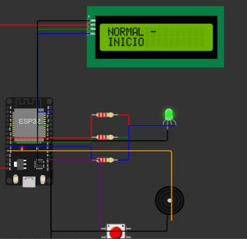
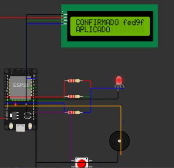
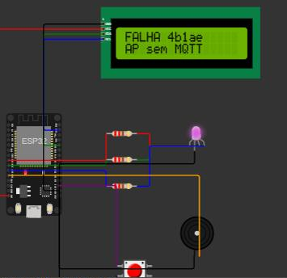
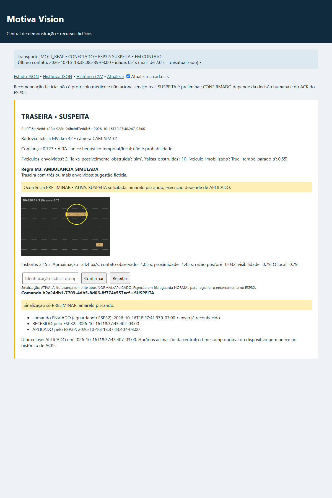
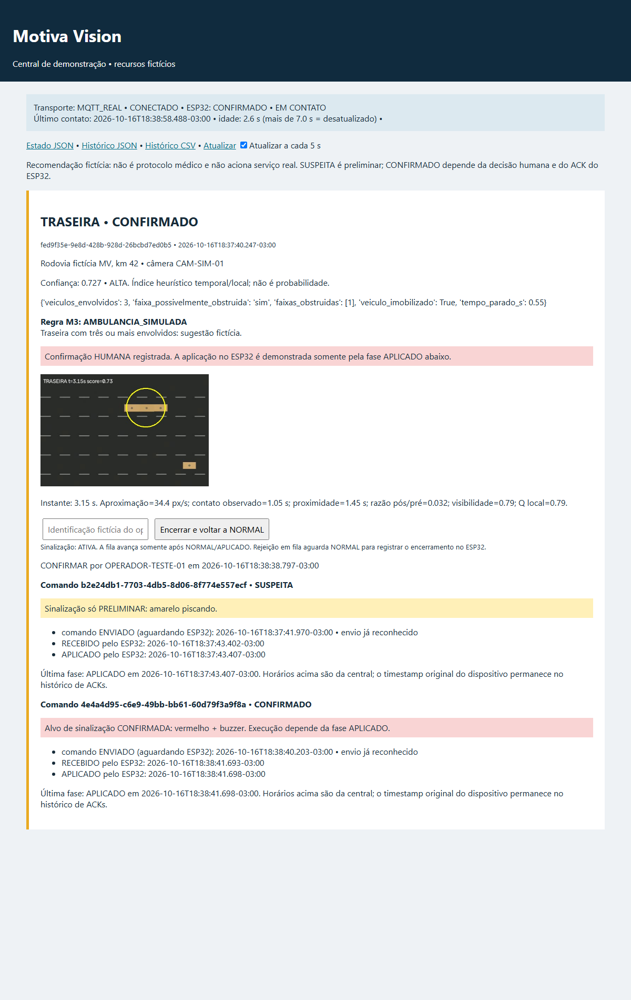
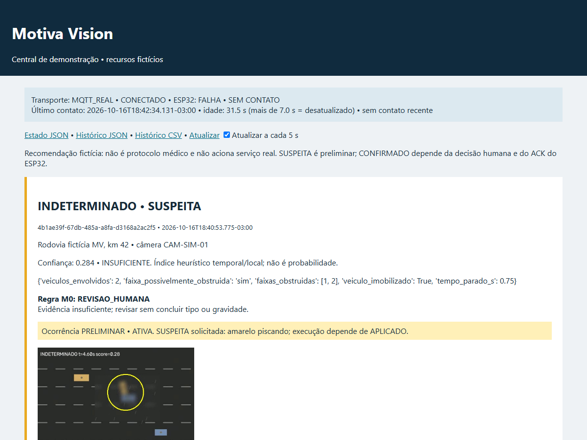
Congelamento: 2026-10-16T17:59:37.711-03:00. Detector SHA-256: 1f6e0911180b4c5aa1dcbc37757f8c81bfb374db4ac0b8b32c8e23148bc984de.
Hashes de fontes, manifesto e vídeos ficam em calibration.json. O relatório recusa
fontes diferentes do congelamento. O diagnóstico dos erros só lê imagens com o detector
inalterado; não é uma nova calibração. Pesos e limiar foram escolhidos antes do final.
| Conjunto | Acertos | FP | FN | Erro de tipo | INDETERMINADO |
|---|---|---|---|---|---|
| dev | 6/6 | 0 | 0 | 0 | 1 |
| final | 4/6 | 0 | 1 | 0 | 0 |
| Vídeo / conjunto | Esperado | Obtido | Score | Regra | Acertou | Eventos |
|---|---|---|---|---|---|---|
| seq01.mp4 / dev | SEM ACIDENTE | SEM ACIDENTE | N/A | SEM_EVENTO | True | 0 |
| seq02.mp4 / final | LATERAL | SEM ACIDENTE | N/A | SEM_EVENTO | False | 0 |
| seq03.mp4 / dev | INDETERMINADO | INDETERMINADO | 0.284 | M0 | True | 1 |
| seq04.mp4 / dev | TRASEIRA | TRASEIRA | 0.727 | M3 | True | 1 |
| seq05.mp4 / final | SEM ACIDENTE | SEM ACIDENTE | N/A | SEM_EVENTO | True | 0 |
| seq06.mp4 / final | FRONTAL | FRONTAL | 0.757 | M1 | True | 1 |
| seq07.mp4 / dev | SEM ACIDENTE | SEM ACIDENTE | N/A | SEM_EVENTO | True | 0 |
| seq08.mp4 / dev | LATERAL | LATERAL | 0.612 | M2 | True | 1 |
| seq09.mp4 / final | INDETERMINADO | SEM ACIDENTE | N/A | SEM_EVENTO | False | 0 |
| seq10.mp4 / final | TRASEIRA | TRASEIRA | 0.719 | M4 | True | 1 |
| seq11.mp4 / dev | FRONTAL | FRONTAL | 0.832 | M1 | True | 1 |
| seq12.mp4 / final | SEM ACIDENTE | SEM ACIDENTE | N/A | SEM_EVENTO | True | 0 |
FP: categoria de acidente prevista em não acidente/ambíguo. FN: acidente esperado sem categoria de acidente prevista. Erro de tipo conta separadamente. Erro de abstenção é ambíguo esperado com outra saída; o de seq09 aparece no acerto geral, não em FN. N/A indica ausência de evento e portanto de escore; não é índice zero inventado.
Termos completos A/C/D/I/M, qualidade local Q, indicadores e motivo estão nos
payloads de data/results/dev.json e final.json. A seção de algoritmo define
suas unidades; os quadros anotados estão no Anexo A.
| Teste obrigatório | Esperado | Obtido | Evidência | Passou |
|---|---|---|---|---|
| 1. Três categorias | Reconhecer seis acidentes, dois de cada tipo. | 5/6; dev 3/3, final 2/3; seq02 LATERAL → SEM ACIDENTE. | data/results/dev.json; final.json; tests/test_vision.py::test_dev_temporal_accidents | PARCIAL |
| 2. Tráfego sem acidente | Quatro negativos sem ocorrência. | 4/4; 0 eventos nos negativos. | data/results/dev.json; final.json; 07_detector_seq01.json | SIM |
| 3. Visibilidade prejudicada | Explicitar INDETERMINADO e revisão humana. | 1/2; seq03 0,284/M0; seq09 → SEM ACIDENTE. | 07_detector_seq03.json; data/results/final.json | PARCIAL |
| 4. Ocorrência persistente | Um event_id por episódio nas sequências. | 6 sequências com evento; contagens: [1, 1, 1, 1, 1, 1]. | data/results/dev.json; final.json; tests/test_vision.py::test_spatiotemporal_deduplication | SIM |
| 5. Decisões humanas | Confirmar/rejeitar, identificar operador e aplicar. | 4 decisões; 7 comandos APLICADO; rejeição → NORMAL (5 atuações). | 03_status_confirmado.json; 06_status_rejeitado.json; 10_historico.json | SIM |
| 6. Comunicação indisponível | FALHA e recuperação automática. | LWT/SEM CONTATO; idade 24.2 s; depois SUSPEITA/EM CONTATO. Heartbeat: foto + diário. | 08_wokwi_falha_sem_heartbeat.jpg; 09_status_1.json; 09_status_3.json; log.txt | SIM (injeção) |
| 7. Comando duplicado | ACK repetido sem repetir atuação; encerrado não reabre. | 3 RECEBIDO + 3 APLICADO; atuações 2 → 2; reabertura: 3 RECUSADO, NORMAL. | 04_acks_duplicado.txt; 04_status_apos_duplicado.json; 05_acks_reabrir.txt; log.txt | SIM |
| 8. Integração completa | Vídeo → MQTT → central → ESP32 → ACK. | seq04 TRASEIRA → SUSPEITA → CONFIRMADO; 3 eventos, 7 comandos e 14 ACKs no fechamento. | 02_detector_seq04.json; 02_status_suspeita.json; 03_status_confirmado.json; 10_historico.json | SIM |
64 testes passaram; código de saída = 0.
O registro completo de cada teste está em data/results/pytest.json, e a saída
literal em data/results/pytest.txt. A suíte usa transporte em memória,
modelo do dispositivo e cliente de teste Flask; não substitui o ensaio Wokwi.
A matriz de rastreabilidade relaciona requisitos,
implementações, testes e evidências sem repetir aqui a listagem completa.
A avaliação final foi 4/6; não se corrigiu o detector para os dois erros. O caso lateral de seq02 é um falso negativo. Em seq09, oclusão parcial impediu expressar a incerteza esperada. O diagnóstico final-diagnostics.json registrou zero candidatos nas duas cenas e queda de visibilidade de rastros. Não se deve atribuir ausência de evento a um escore que não chegou a existir. O reconhecimento sob oclusão permanece parcial. Uma hipótese a investigar num novo ciclo é que contato oblíquo no limite da imagem e contornos encobertos falham antes dos portões temporais. Não foi validada correção.
As quatro situações negativas não geraram ocorrência; isso não estima segurança em tráfego real. Dev pequeno, física simplificada, fundo uniforme e conhecimento da câmera limitam validade externa. Sem probabilidade calibrada, sem diagnóstico, sem dados de vítimas, sem serviço de emergência acionado. Deduplicação de episódio é local à sessão, e a visão não tem outbox persistente de eventos. URLs de imagens requerem arquivos locais no computador da central. O broker público permite forjar mensagens; validação de IDs não autentica origem.
Melhorias para outro conjunto: teste real autorizado e independente; calibração em perspectiva; compensação de câmera e iluminação; rastreamento durante oclusão longa; abstenção por perda localizada de trajetória; identidade durável de episódio; outbox de eventos; broker privado TLS/autenticação/ACL; testes de energia e NVS e medição fim a fim com Wokwi. Não são capacidades já verificadas.
Erro adicional de indicador: seq04 tem quatro veículos em cena, dois envolvidos; o evento contou três e acionou M3 (ambulância simulada). O acerto do tipo TRASEIRA não comprova o indicador nem a recomendação. O agrupamento por proximidade e movimento pode incluir rastro indevido; a causa exata não foi isolada. Avaliar contagens, participação por ator, obstrução e regra contra gabarito é melhoria proposta, sem alterar o detector nesta entrega. Ver análise detalhada na integração.
Limitações dos ensaios: ausência de log integral de compilação, versão exata de LiquidCrystal I2C, áudio e frequência física dos atuadores, reinício/NVS/energia e FIFO simultânea no Wokwi não foram testados. A coleta documenta o firmware atual no simulador; não demonstra hardware físico.
As instruções completas estão no README. Na raiz, com .venv existente:
.venv/Scripts/python -m pytest -q -p no:cacheprovider --tb=short
.venv/Scripts/python -m tools.build_report
.venv/Scripts/python -m tools.demo
A execução dev/final conserva os tipos, escores e regras da avaliação congelada.
A correção de acentuação no comentário de parâmetros não altera o algoritmo;
data/results/equivalencia.json registra a comparação e os hashes.
Python 3.14.2; OpenCV 5.0.0; NumPy 2.5.4; paho-mqtt 2.1.0; Flask 3.1.3; pytest 9.1.1. Requirements fixados; Markdown é usado somente neste construtor. No Wokwi: PubSubClient 2.8, ArduinoJson 7.4.2 e LiquidCrystal I2C (instalação/versão exata desta última não registrada na coleta). Abrir HTML no Edge e imprimir A4 com fundos, sem cabeçalhos/rodapés; inspecionar todas as páginas após exportar.
Referências de implementação (links não consultados na execução offline):
Os arquivos pytest.txt, dev-stdout.txt e final-stdout.txt preservam as saídas completas. A matriz de rastreabilidade contém a relação detalhada entre requisitos, implementação, testes e evidências.
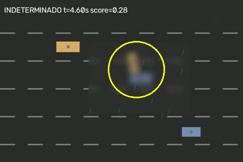
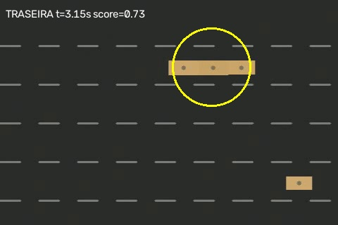
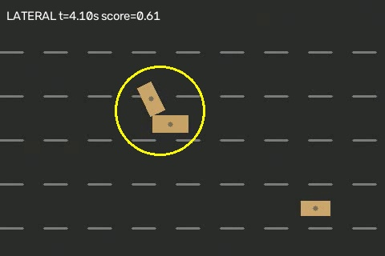
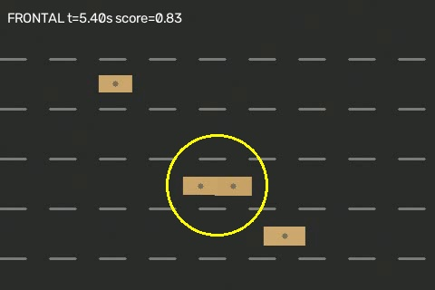
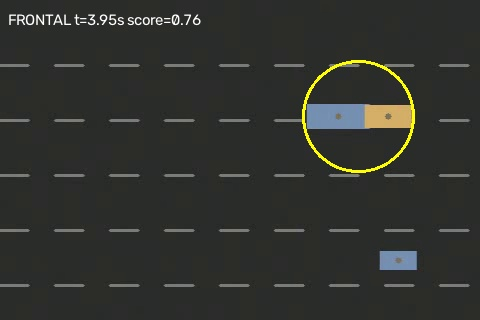
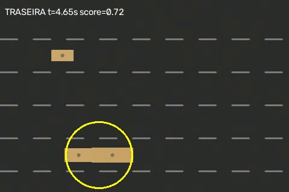